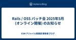

ESM アジャイル事業部 開発者ブログ
https://blog.agile.esm.co.jp/
永和システムマネジメント アジャイル事業部の開発者ブログです。
フィード

Rails / OSS パッチ会 2025年5月 (オンライン開催) のお知らせ
ESM アジャイル事業部 開発者ブログ
2025年5月の Rails / OSS パッチ会を 5月15日(木)に Discord でオンライン開催します。 この会をひとことでいうと、日頃のお仕事で使っている Rails をはじめとする OSS について、upstream にパッチを送る会です。 会には Ruby と Rails のコミッターである顧問の a_matsuda もいますので、例えば Rails に送るパッチのネタがあるけれど、パッチを送るに適しているかの判断やパッチを送る流れが悩ましいときなど a_matsuda に相談して足がかりにするなどできます。 開催時間は 17:00-19:00 となりますがご都合のあう方はぜひ…
1日前

プロジェクトのデプロイ方法をKamalに移行しました
ESM アジャイル事業部 開発者ブログ
こんにちは！maimuです。 私が参加しているプロジェクトでは、複数のRailsアプリケーションが稼働しています。デプロイの方法として Docker Compose で対応をしていましたが、夜間にデプロイ作業をする必要があり、毎回タイミングの調整作業が発生していたため、ゼロダウンタイムでデプロイが可能なKamalに移行することになりました。 Kamal でデプロイを実行する場合、Rails アプリケーションのデータベースに SQLite を利用していたり、その他のミドルウェアを必要としない場合は設定ファイルは初期設定を少し編集するのみで対応ができます。 しかし、実際にサービスとして利用されてい…
1ヶ月前
RubyKaigi 2025への永和システムマネジメントの5つの関わり
ESM アジャイル事業部 開発者ブログ
私たち永和システムマネジメント (ESM, Inc.) は RubyKaigi 2025 に5つの関わりをします。 1. @koic と @junk0612 が RubyKaigi 本編に登壇 (Day 2) Day 2 に @koic が『RuboCop: Modularity and AST Insights』というタイトルで登壇し、@junk0612 が『The Implementations of Advanced LR Parser Algorithm』というタイトルで、登壇します。それぞれ本番に向けて準備中です。お楽しみに！ blog.agile.esm.co.jp 2. ESM …
1ヶ月前
RubyKaigi 2025で、ボードゲーム「Ruby on Timeline」を配布します！
ESM アジャイル事業部 開発者ブログ
こんにちは。Nintendo Switch 2 を日本版で買うか多言語版で買うか悩んでいる @junk0612です。 RubyKaigi 2025 の開催がいよいよ近づいてきました。スケジュールが発表され、スポンサーイベントも出揃ってきています。 ESM でも ESM Drinkup at RubyKaigi 2025 を開催予定です (告知はこちら)。 esminc.doorkeeper.jp ですが、今年はこれだけではありません。まずは、こちらをご覧ください (ニンダイ風)。 ババーン このたび永和システムマネジメントは「Ruby on Timeline」を作成しました。RubyKaigi…
1ヶ月前
ESM Drinkup at RubyKaigi 2025 のご案内
ESM アジャイル事業部 開発者ブログ
こんにちは！@maimu です。 先週から参加登録を開始した ESM Drinkup at RubyKaigi 2025 についてたくさんのお申し込みをいただいており、ありがとうございます🙏 一部の参加枠がすでに埋まり始めていますが、最大で90人の方にお越しいただけるように準備しています。そのため、枠が埋まっていたとしてもキャンセル待ちとしてお申し込みいただき、繰り上がり当落の結果をお待ちください。 esminc.doorkeeper.jp 今年は、『ESM 日本酒セレクション (RubyKaigi 2025 エディション) 』として以下の日本酒を用意します。会場となる五志喜さんの郷土料理と一…
1ヶ月前
Rails / OSS パッチ会 2025年4月 (オンライン開催) のお知らせ
ESM アジャイル事業部 開発者ブログ
2025年4月の Rails / OSS パッチ会を 4月4日(金)に Discord でオンライン開催します。 この会をひとことでいうと、日頃のお仕事で使っている Rails をはじめとする OSS について、upstream にパッチを送る会です。 会には Ruby と Rails のコミッターである顧問の a_matsuda もいますので、例えば Rails に送るパッチのネタがあるけれど、パッチを送るに適しているかの判断やパッチを送る流れが悩ましいときなど a_matsuda に相談して足がかりにするなどできます。 開催時間は 17:00-19:00 となりますがご都合のあう方はぜひご…
1ヶ月前
ESM Drinkup at RubyKaigi 2025 の参加登録について🍻
ESM アジャイル事業部 開発者ブログ
こんにちは！maimuです。 本日は『ESM Drinkup at RubyKaigi 2025』の詳細と参加登録についてのご案内です。 RubyKaigi最終日の4月18日(金)の夜に、愛媛の地元食材をふんだんに使った郷土料理を提供する郷土料理 五志喜を貸切にしてのドリンクアップを開催します🍻 参加の募集人数は90名を予定しています。 まずは75名までの方を先着枠とし、先着終了後は15名分の枠を抽選とさせていただきます。もし参加登録開始後に先着枠を逃してしまった場合は、キャンセル待ちでお待ちください。 募集開始は、3月27日(木)の12時を予定しています。 募集開始の際は X の @ruby…
2ヶ月前
で、シリアライズについて（シリアライズとデシリアライズのはなし）。
ESM アジャイル事業部 開発者ブログ
In computing, serialization is the process of translating a data structure or object state into a format that can be stored or transmitted and reconstructed later. The opposite operation, extracting a data structure from a series of bytes, is deserialization. en.wikipedia.org 開発者ブログの主にネタプログラミング担当、e.…
2ヶ月前
RubyKaigi 2025 に Drinkup Sponsor として協賛します🍊🍻
ESM アジャイル事業部 開発者ブログ
こんにちは！maimuです。 本日は RubyKaigi 2025 へのスポンサー協賛のお知らせです🍻 永和システムマネジメントは RubyKaigi 2025 へ Drinkup Sponsor として協賛します。 募集開始はまだ少し先になりますが、本ブログの内容をぜひチェックいただき、イベントページ公開までお待ちください。 Drinkup Sponsor RubyKaigi 2025 は愛媛県松山市で開催されます。 RubyKaigi 2025 のロゴから真っ先にみかんが連想されますが、松山といえば鯛めしも有名ですね。 今回は、鯛めしをはじめとした美味しい料理と日本酒を提供するドリンクアッ…
2ヶ月前
RubyKaigi 2025 に永和システムマネジメントから @koic @junk0612 の2人が登壇します
ESM アジャイル事業部 開発者ブログ
2025年4月16日(水) から18日(金) の3日間にわたって開催される RubyKaigi 2025 に永和システムマネジメントから @koic (Day 2) 、 @junk0612 (Day 2) の2人が登壇します。 rubykaigi.org ここでは、それぞれの登壇者から講演内容について軽く紹介をします。 4月17日(木) 14:40-15:10 @koic 『RuboCop: Modularity and AST Insights』 @koic です。今年は『RuboCop: Modularity and AST Insights』というタイトルで話します。 rubykaigi…
2ヶ月前
Rails / OSS パッチ会 2025年3月 (オンライン開催) のお知らせ
ESM アジャイル事業部 開発者ブログ
2025年3月の Rails / OSS パッチ会を 3月5日(水)に Discord でオンライン開催します。 この会をひとことでいうと、日頃のお仕事で使っている Rails をはじめとする OSS について、upstream にパッチを送る会です。 会には Ruby と Rails のコミッターである顧問の a_matsuda もいますので、例えば Rails に送るパッチのネタがあるけれど、パッチを送るに適しているかの判断やパッチを送る流れが悩ましいときなど a_matsuda に相談して足がかりにするなどできます。 開催時間は 17:00-19:00 となりますがご都合のあう方はぜひご…
2ヶ月前
TokyoWomen.rb #1 に maimu が登壇します！
ESM アジャイル事業部 開発者ブログ
2025年3月1日に開催される TokyoWomen.rb #1 にアジャイル事業部から @maimuが登壇します。 tokyowomenrb.connpass.com maimu 『Rails 1.0 のコードで学ぶ find_by_* と method_missing の仕組み』 最近、ドーナツ屋さんの開拓にハマっている maimu です。 TokyoWomen.rb #1 で「Rails 1.0 のコードで学ぶ find_by_* と method_missing の仕組み」というタイトルで発表をします。 TokyoWomen.rb #1 のテーマは「Rubyっておもしろい！」です。 私…
3ヶ月前
Rails / OSS パッチ会 2025年2月 (オンライン開催) のお知らせ
ESM アジャイル事業部 開発者ブログ
2025年2月の Rails / OSS パッチ会を 2月13日(木)に Discord でオンライン開催します。 この会をひとことでいうと、日頃のお仕事で使っている Rails をはじめとする OSS について、upstream にパッチを送る会です。 会には Ruby と Rails のコミッターである顧問の a_matsuda もいますので、例えば Rails に送るパッチのネタがあるけれど、パッチを送るに適しているかの判断やパッチを送る流れが悩ましいときなど a_matsuda に相談して足がかりにするなどできます。 開催時間は 17:00-19:00 となりますがご都合のあう方はぜひ…
3ヶ月前
Rails / OSS パッチ会 2025年1月 (オンライン開催) のお知らせ
ESM アジャイル事業部 開発者ブログ
2025年1月の Rails / OSS パッチ会を 1月23日(木)に Discord でオンライン開催します。 この会をひとことでいうと、日頃のお仕事で使っている Rails をはじめとする OSS について、upstream にパッチを送る会です。 会には Ruby と Rails のコミッターである顧問の a_matsuda もいますので、例えば Rails に送るパッチのネタがあるけれど、パッチを送るに適しているかの判断やパッチを送る流れが悩ましいときなど a_matsuda に相談して足がかりにするなどできます。 開催時間は 17:00-19:00 となりますがご都合のあう方はぜひ…
4ヶ月前
東京Ruby会議12のRegional.rb and the Tokyo Metropolisにmaimuが登壇します！
ESM アジャイル事業部 開発者ブログ
1月も後半に入り、冬休みから通常モードへの切り替えがようやく落ち着いてきた@maimuです。 今週末はついに東京Ruby会議12が開催されます！ regional.rubykaigi.org チケットは完売しているとのことで、こちらのブログを読んでいただいている方の中にも当日参加予定の方が多数いらっしゃるのではないでしょうか？ 東京Ruby会議12では、前夜祭に弊社からS.H.が登壇予定です。 blog.agile.esm.co.jp そして本編の企画であるRegional.rb and the Tokyo Metropolisに私もしんめ.rbの主催者として登壇します！ 東京Ruby会議12…
4ヶ月前
東京Ruby会議12前夜祭にS.H.が登壇します
ESM アジャイル事業部 開発者ブログ
2025年1月17日(金)に開催される東京Ruby会議12前夜祭に、永和システムマネジメントからS.H.が登壇します。 connpass.com S.H. 『ゆるゆるMastodon鯖缶生活』 S.H.です。 東京Ruby会議12前夜祭イベントで『ゆるゆるMastodon鯖缶生活』というタイトルで話をします。 今回はMastodonのサーバ管理者(通称:鯖缶)としての暮らしぶりについてお話しします。 具体的には2017年のMastodonブームの頃にMastodonサーバを建て、現在までの7年間のサーバ運用と運用していく中でのトラブル対応やそれによるスキルアップについてお話します。 2017年…
4ヶ月前
角谷さんと一緒に読むTidy First?読書会
ESM アジャイル事業部 開発者ブログ
こんにちは！ maimuです。 この記事は永和システムマネジメントアドベントカレンダー の16日目の記事です！ アジャイル事業部では今年の10月より弊社フェローの角谷さんと一緒にTidy First?読書会を月2回ペースで開催しています。 Tidy First?: A Personal Exercise in Empirical Software Design (English Edition)作者:Beck, KentO'Reilly MediaAmazon 本記事では開催の経緯やどんな風に読み進めているのかをまとめ、読書会の雰囲気を少しでもお伝えできたらと思います。 開催の経緯 今年の6月…
5ヶ月前
Rails / OSS パッチ会 2024年12月のお知らせ
ESM アジャイル事業部 開発者ブログ
2024年12月の Rails / OSS パッチ会を 12月13日(金)に Discord でオンライン開催します。 この会をひとことでいうと、日頃のお仕事で使っている Rails をはじめとする OSS について、upstream にパッチを送る会です。 会には Ruby と Rails のコミッターである顧問の a_matsuda もいますので、例えば Rails に送るパッチのネタがあるけれど、パッチを送るに適しているかの判断やパッチを送る流れが悩ましいときなど a_matsuda に相談して足がかりにするなどできます。 開催時間は 17:00-19:00 となりますがご都合のあう方は…
5ヶ月前
RubyWorld Conference 2024 に参加できないけどチームのみんなに良さを伝えた
ESM アジャイル事業部 開発者ブログ
ふーが です。こんにちは。 この記事は ESM Advent Calendar 2024 の 5 日目の記事です！ 世間は RubyWorld Conference 2024 一色な今日この頃。僕は個人的な都合で今年は参加できず大変悔しい想いをしております。 そんななか、今いるチームのほとんどの方が RubyWorld Conference（以下「RWC」と記載） に参加したことがないという話を聞きました。「これは布教するしかない！」と思い立ち、チーム内での勉強会の時間をいただいて布教活動をしてきました。 ここに活動報告をさせていただきます。 RubyWorld Conference 2024…
5ヶ月前
Mastodon meets Prism
ESM アジャイル事業部 開発者ブログ
ESM Advent Calendar 2024の4日目の記事です。 こんにちは、構文解析器研究部員のS.H.です。 皆さんご存じかもしれませんが、最近RubyのデフォルトのパーサーとしてPrismが導入されましたね。 bugs.ruby-lang.org デフォルトのパーサーが変更されたことにより、RailsなどのWebアプリケーションで影響が出るのかなどが気になりました。 そこでそこそこ大きいWebアプリケーションであるMastodonで利用できないかを試してみた記事になります。 環境 最新のMastodonのバージョンであるv4.3.1で試しました。 MastodonではDev Cont…
5ヶ月前
JRuby と SQL Server を利用した Rails の開発環境を作る
ESM アジャイル事業部 開発者ブログ
この記事は、永和システムマネジメントのアドベントカレンダー ESM Advent Calendar 2024 の 3 日目の記事です。 はじめに @wai-doi です。自分が以前アサインされていた Rails アプリケーションは、古い JRuby と Rails に SQL Server を組み合わせた構成のアプリケーションでした。 最近の Rails で JRuby と SQL Server を使った構成で開発をしようとする場合、どのように環境構築できるのか気になったため調べてみました。 方針 なるべく個人の環境に依存しないように Docker を利用して構築します。また、Rails 7.…
5ヶ月前
Rails 8 を語る会を開催しました
ESM アジャイル事業部 開発者ブログ
こんにちは。福井で働く taiju です。 この記事は ESM Advent Calendar 2024 の 1 日目の記事です。 先日、アジャイル事業部内で「Rails 8 を語る会」というイベントを開催しました！Rails 8 の新機能や変更点について、みんなで知見を共有しながらディスカッションしたこのイベントは、学びも多く、盛り上がりました。この記事では、その内容をレポートします。 Rails 8 を語る会とは 2024 年 11 月 8 日、Rails 8 がリリースされました。今回のリリースでは、#NOBUILD、#NOPAAS という新たな標語が掲げられ、それに関連する機能が多数追…
5ヶ月前
RubyWorld Conference 2024に登壇、協賛します
ESM アジャイル事業部 開発者ブログ
2024年12月5日(木) から 6 日(金) にかけて松江で開催される、RubyWorld Conference 2024に koic が登壇、永和システムマネジメントは Platinum スポンサーとして協賛します。 本編登壇: 12月5日(木) 14:50-15:05 koic が『Rubyプログラミングスクールからの採用と育成』というタイトルで登壇します。 2024.rubyworld-conf.org 講演については登壇者のブログを参照してください。 koic.hatenablog.com ショートプレゼンテーション: 12月5日(木) 12:00-12:10 『ESM スーパーライ…
6ヶ月前
Rails / OSS パッチ会 2024年11月のお知らせ
ESM アジャイル事業部 開発者ブログ
2024年11月の Rails / OSS パッチ会を 11月25日(月)に Discord でオンライン開催します。 この会をひとことでいうと、日頃のお仕事で使っている Rails をはじめとする OSS について、upstream にパッチを送る会です。 会には Ruby と Rails のコミッターである顧問の a_matsuda もいますので、例えば Rails に送るパッチのネタがあるけれど、パッチを送るに適しているかの判断やパッチを送る流れが悩ましいときなど a_matsuda に相談して足がかりにするなどできます。 開催時間は 17:00-19:00 となりますがご都合のあう方は…
6ヶ月前
Rails / OSS パッチ会 2024年10月のお知らせ
ESM アジャイル事業部 開発者ブログ
2024年10月の Rails / OSS パッチ会を 10月30日(水)に Discord でオンライン開催します。 この会をひとことでいうと、日頃のお仕事で使っている Rails をはじめとする OSS について、upstream にパッチを送る会です。 会には Ruby と Rails のコミッターである顧問の a_matsuda もいますので、例えば Rails に送るパッチのネタがあるけれど、パッチを送るに適しているかの判断やパッチを送る流れが悩ましいときなど a_matsuda に相談して足がかりにするなどできます。 開催時間は 17:00-19:00 となりますがご都合のあう方は…
7ヶ月前
3 社共催で Kaigi on Rails 2024 の After Event を開催します
ESM アジャイル事業部 開発者ブログ
こんにちは、ふーが（@fugakkbn）です。 Kaigi on Rails 2024 がいよいよ来週に迫ってきました。僕は個人的にオーガナイザーとしても関わっているのですが、今年は昨年よりもさらにパワーアップしたカンファレンスになりそうです。 今年も例年通りおもしろそうなセッションばかりで、どちらのトラックを見るか迷ってしまいますね…！弊社からは @swamp09 が登壇するので、そちらの応援にも熱がはいります。 昨年に続き 2 度目のオンサイトとなる Kaigi on Rails 2024。Rubyist の皆さんと会場でお会いできるのを楽しみにしています。 After Event を開催…
7ヶ月前
ESM アジャイル事業部が購入している書籍たち (2024 秋)
ESM アジャイル事業部 開発者ブログ
今年も『ESM アジャイル事業部が購入している書籍たち (2024 秋) 』としてお送りします。 永和システムマネジメント アジャイル事業部で運用している書籍購入支援制度を使って、ここ1年間での購入がされている書籍をこの記事でリストアップします。 弊社事業部メンバーたちがどのような書籍を購入しているか、読書の秋の参考にどうぞ。 Ruby C言語 Java Web データベース インフラ ソフトウェア設計 / アーキテクチャ テスト 処理系 / 低レイヤー 構文解析 その他 「ESM Bookshelf of the Year 2024」🥇 ★は複数人が購入。★★はその中でも購入が多かったタイト…
7ヶ月前
角谷トーク・フィヨブーフェス2024にスポンサーします
ESM アジャイル事業部 開発者ブログ
2024年10月24日 (木) に東京の渋谷で開催される『角谷トーク・フィヨブーフェス2024』にスポンサーします。 fjordbootcamp.connpass.com 角谷さんには弊社フェローとしてもお世話になっており、最近の社内活動では『Tidy First?』読書会に関わっていただいています。 Tidy First?: A Personal Exercise in Empirical Software Design (English Edition)作者:Beck, KentO'Reilly MediaAmazon スポンサーとしての弊社からは、フィヨルドブートキャンプ卒業生でもある …
7ヶ月前
永和システムマネジメントで育児休暇を取得してみた
ESM アジャイル事業部 開発者ブログ
はじめに 宮崎からお送りしていますyoshinoです。 個人的なことですが、10月から育休を6ヶ月取得することになりました。 この記事では私が経験した育児休暇を取得するまでの流れと、弊社の育休のサポート制度を紹介したいと思います。 ちなみに、私が入社した2018年以降、アジャイル事業部では男性社員の育児休暇取得率は100%で、取得期間は3ヶ月~6ヶ月となっています。 育児休暇取得までの流れ 事業部長 (@mhirata) に育児休暇の取得をしたい旨を相談すると、私と事務の方を含めたSlackグループを作成してくれました (弊社ではアジャイル事業部だけでなく、全社員がSlackを利用しており、事…
7ヶ月前
Kaigi on Rails 2024にswamp09が登壇します
ESM アジャイル事業部 開発者ブログ
2024年10月25日 (金) から 10月26日 (土) に東京の有明で開催される『Kaigi on Rails 2024』の2日目 (10月26日) に弊社から @swamp09 が登壇します。 kaigionrails.org ここでは、登壇者の @swamp09 から講演内容について軽く紹介をします。 Hall Blue: 14:10~14:25 Importmapを使ったJavaScriptの読み込みとブラウザアドオンの影響 (@swamp09) 私 (@swamp09) が参加しているプロジェクトでは、HotwireやImportmapを使用してRailsアプリ開発を行っています。…
7ヶ月前